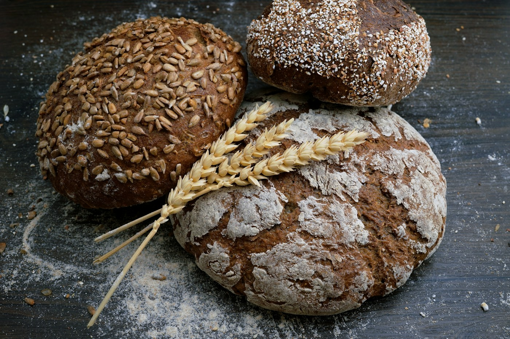

01 / BAKEDWarm-hearted
Warm-hearted
baking
Cinnamon rolls, cakes, breads and buns. Everyday favorites for a little homemade comfort.
Ask about baked goodsCOTTAGE BAKERY & FARM STAND
Baked goods, pantry favorites and seasonal finds.
A local stop in Thomaston, Georgia.

SOMETHING FOR THE TABLE
A taste of the range listed in the business’s public profile.
Ask the bakery what’s available today.
Cinnamon rolls, cakes, breads and buns. Everyday favorites for a little homemade comfort.
Ask about baked goodsApple pie filling, marmalade, pickled okra and more from the pantry’s published selection.
Ask about pantry goodsFarm eggs and seasonal produce are part of the range. Check directly for current stock.
Ask what’s in seasonA showcase, not a live menu. Products, availability, ingredients and prices must be confirmed with the business.
ROOTED IN THOMASTON
A cottage bakery and farm stand, with something for the bread basket and something for the pantry.
Homestead Pantry is listed at 3971 Jeff Davis Road in Thomaston. Its public profile brings together baked goods, jar goods, farm eggs and seasonal produce.
Visit the business on FacebookLET’S TALK GOOD FOOD
Before you head over, contact the business to confirm
opening times, availability and pickup arrangements.
Please confirm directly before visiting.